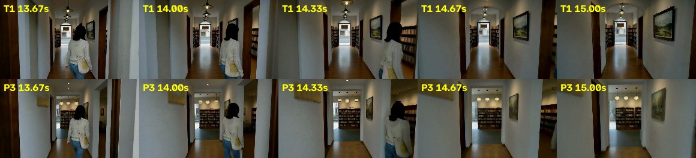
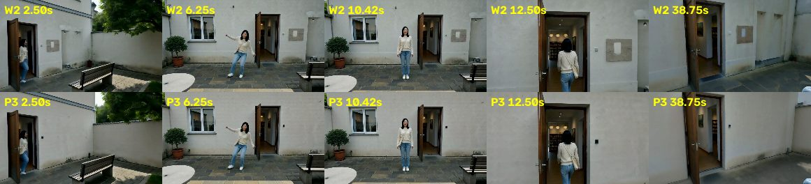
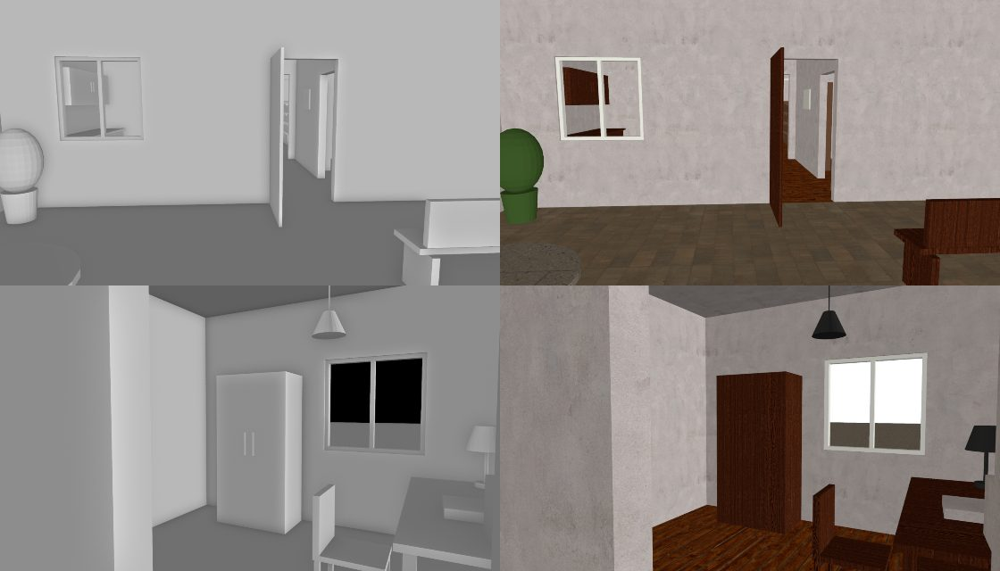
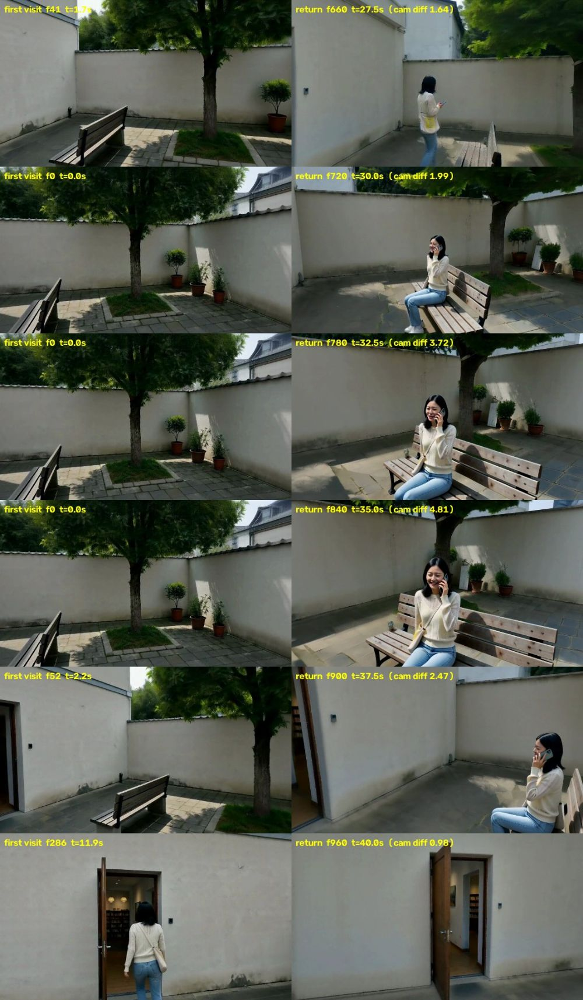

输入：一段剧本，粗糙的也可以，由规划器补全。可选：参考动作视频、人物照片、参考声音。
输出：分钟级、中间不剪辑的一条连续镜头，写实，带对白和环境声。相机可以穿门过廊，也能回到之前去过的地方。
难点：视频模型一次最多生成约 15 秒，只能分段生成再无缝接上；回到老地方时，场景、人、声音都要和之前一样；人不穿家具；动作要符合剧本或参考动作。
世界状态 = 白模（3D 布局、人物去哪、相机怎么走）+ 三种记忆（场景长什么样、人长什么样、声音是什么样）。开拍前，场景记忆的初值就是带材质的白模：哪里是平墙、哪里有门窗、墙是灰泥、屋里是木地板、院子是小方砖，还没拍到之前就已经知道。
开拍前：大模型把剧本写成白模和剧情节拍 → 按剧情切段（交接放在镜头和人都闲的时候）→ Blender 渲染白模 → 从白模算出每段"镜头对着什么、人第几秒进画面、左右站位" → 大模型据此写每段的 prompt。
每一段：① 从世界状态渲染条件：深度、场景记忆、人物参考图、音色、动作参考 → ② H3 生成一次（4 张卡）→ ③ 登记回世界：画出来的场景贴回 3D（包括 H3 自己加的花盆这类东西），人在哪、长什么样存进人物记忆，台词存进声音记忆。下一段的所有条件都只从世界状态里取，不针对某个镜头单独调。
| 条件 | 怎么来 | 作用于哪几步（共 8 步） |
|---|---|---|
| 场景深度 | 看过的地方用记忆里的几何，没看过的用白模 | 全部 8 步 |
| 人的深度 | 前 2 步用真人体（SMPL-X）定位置、朝向和大致姿势；之后换成只表示占位的人形，动作细节和手机这类小道具交给 H3。接段时从上一段实际画到的位置开始，1.5 秒内回到规划路线 | 真人体 1–2，占位人形 3–8 |
| 场景记忆（硬抄） | 几何可靠的表面照抄，见"场景记忆"一节；两段重叠的前 60% 每一步都整帧照抄上一段的画面（去掉人） | 全部 8 步 |
| 场景记忆（软约束） | 其余看过的地方：每步之后把画面往"加了相应噪声的记忆"拉。还没拍到的地方拉向带材质的白模；离门窗远的平墙全力度拉向材质白模，不给 H3 在墙上加东西的机会 | 看过的 1–6（地面 1–8），平墙 1–6，其余没看过的 1–4 |
| 动作参考（搭档的方法） | 参考视频和我们的镜头视角不同：先恢复成 3D，从我们的机位渲染成灰模，再让 H3 同时看原视频和灰模生成参考视频 | 预处理里：灰模 1–6，原视频 3–8 |
| 人物参考图、音色 | 从人物记忆里按这一段会出现的角度挑；音色取这个人说过的第一句 | 全部 8 步 |
上一版 T1 有四个毛病：第二段进门时画面"断"一下，第三段坐下前像切了一下镜头，平墙上会长出石牌和凹洞，H3 自己加的小花盆回来会变样。四个都按同一个思路改：出了问题就找它在世界状态里少了什么，补进世界，而不是针对那个镜头调参数。
| 问题 | 原因 | 改法 |
|---|---|---|
| 第二段进门"断" | 两段重叠的 1.5 秒里各画了各的走廊：prompt 写了 arch，H3 把走廊尽头画成圆拱，上一段是方门洞；软约束只管前 6 步，最后 2 步两边各自发挥 | 重叠段前 60% 每一步都照抄上一段；prompt 里的东西按世界里的样子起名（"方顶门洞，没有门"），世界里没有拱门却写了 arch 就打回重写 |
| 第三段坐下前"切镜" | 交接时上一段把她画得比规划偏了 0.6 米，下一段从规划位置开始，接缝处人一跳 | 先量出上一段实际把她画在哪（SAM3 抠人 + 估深度），下一段的人体条件从那里开始，1.5 秒内平滑回到规划路线 |
| 平墙"开洞" | 材质白模只管前几步、力度八成；后面几步 H3 爱往空墙上加石牌、凹洞、壁灯，加了以后记忆又把它当真 | 离任何看得见的门窗 0.4 米以外的墙算平墙，全力度拉到第 6 步。被家具挡住的门窗不算，否则墙会被错留空 |
| H3 加的小东西记不住 | 上一轮为了防止像素"穿墙"，记忆只收规划里有的东西，H3 自己加的花盆被当成噪声丢掉 | 同一段里在 10% 以上的关键帧都出现、立在地面上的一团点，登记成世界里的一件新物体，以后照它画出来的样子记 |


试过但没用的：① 把 H3 加的东西做成圆柱、方块放进白模：H3 照着深度图的形状画，出现了木头管子和绿柱子树干，不用；新东西只存成画出来的点。② 墙和地面另存一张按表面展开的贴图，回来时用贴图重新上色（P3 用了）：记忆图更干净，但成片和不用时（P2）差不多。③ 地面锁到第 8 步、从材质白模往模糊的地面补砖缝：长椅前的地面还是会变，见最后一节。

每段的 prompt 由大模型自动写，但写之前先从白模算好它要用的事实，它只负责把事实写成通顺的描述：
小雨从后门出来，在院子里跳一小段街舞（动作参考），回屋进工作间拿手机看，再走回院子，在长椅前转身坐下给妈妈打电话，镜头最后转回后门。按剧情切成 3 段：0–15.1 秒、13.6–27.3 秒、25.7–40 秒。P3 把这几版里各自做得好的部分合在一起跑了一遍。

| 环节 | R5 | R10 | 做了什么 |
|---|---|---|---|
| 动作参考预处理 | 19.5 分钟 | 8.8 分钟 | 同一个模型和 LoRA，改成 4 卡常驻显存（原来每一步都从 CPU 内存搬权重），结果和原来几乎一模一样 |
| 每段之间的空档 | 15 分钟 | 8 分钟 | 估深度、SAM3 抠人分到两张空卡上同时跑；人物记忆入库、听台词放到后台，和渲染场景记忆同时进行；台词每段只听一次；去掉了生成后的"查人数"（换种子重来救不了 prompt 写错的问题） |
| 生成（每段，含编解码） | 12–13 分钟 | 12–13 分钟 | 去噪本身约 7.5 分钟，其余是加载和编码 |
| 整条 40 秒 | 92.5 分钟 | 约 68 分钟 | 最后一段生成完不再做入库、抠人这些只给后面用的事 |